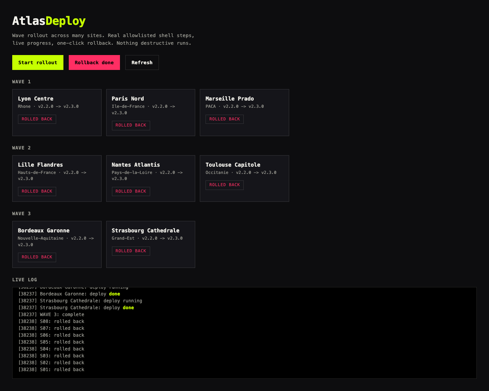

FILE / 06-ATLASDEPLOY · wave orchestrator
AtlasDeploy
Wave deployment orchestrator
A rollout to many sites is either a calm wave sequence or a 3am outage. AtlasDeploy ships in waves with verified rollback. Hit RUN WAVE to deploy the next wave; nodes light up as they come online. Run it three times to finish, a fourth to reset.
"Twelve sites. Three waves. Zero 3am pages."Verified rollback
LIVE APP

AtlasDeploy orchestrating wave deploys with verified rollback.
DISPATCH BOARD · run a wave
WAVE 1
S01WAVE 1
S02WAVE 1
S03WAVE 1
S04WAVE 2
S05WAVE 2
S06WAVE 2
S07WAVE 2
S08WAVE 3
S09WAVE 3
S10WAVE 3
S11WAVE 3
S12